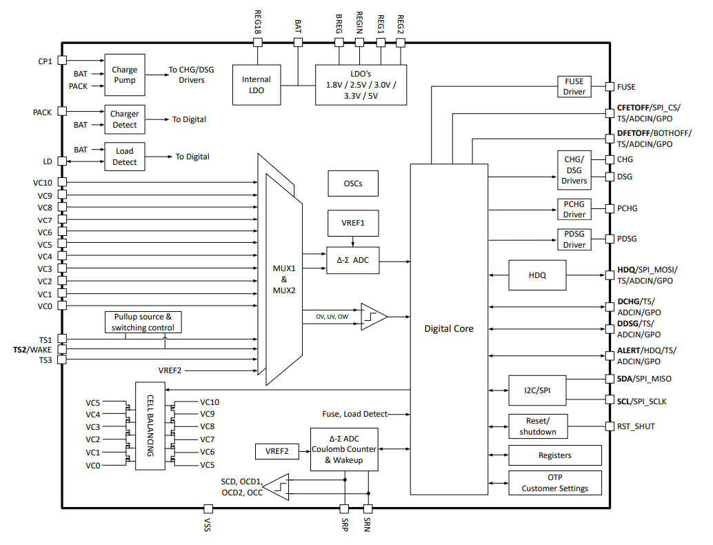
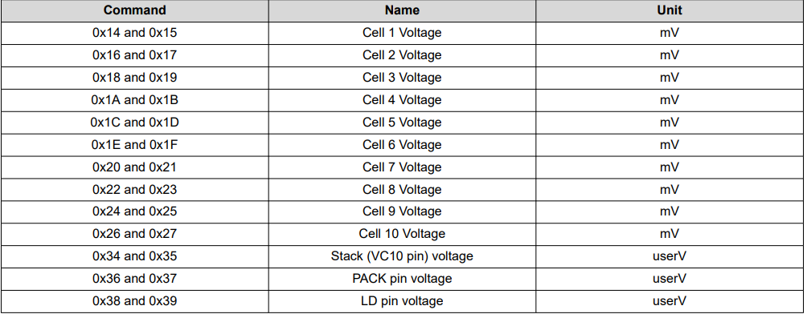

Documentation Webpage for the BQ76942 project
1. Short Description
The BQ76942 Balancer is an integrated circuit specifically designed for battery management applications, with a particular focus on multi-cell lithium-ion or lithium-polymer battery packs. Serving as a sophisticated component of a battery management system (BMS), the BQ76942 offers advanced functionalities such as monitoring cell voltages, balancing charge distribution, and sensing temperature levels. Its primary objective is to ensure the safe and efficient operation of battery packs by closely monitoring individual cell voltages and temperature, thereby preventing issues like overcharging, over-discharging, and thermal runaway. By redistributing charge among cells, the balancer functionality maintains optimal cell balance, extending battery life and enhancing the overall reliability of the system. With its compact size and comprehensive range of features, the BQ76942 Balancer plays a crucial role in the design and implementation of high-performance battery management systems across various applications, including electric vehicles, renewable energy storage systems, and portable electronics.

2. Functional Block Diagram
3. Voltage Measurement
The BQ76942 device integrates a voltage ADC that is multiplexed between measurements of cell voltages, an internal temperature sensor, up to nine external thermistors, and also performs measurements of the voltage at the VC10 pin, the PACK pin, the LD pin, the internal Vref used by the coulomb counter, and the VSS rail (for diagnostic purposes). The BQ76942 device supports measurement of individual differential cell voltages in a series configuration, ranging from 3 series cells to 10 series cells. Each cell voltage measurement is a differential measurement of the voltage between two adjacent cell input pins, such as VC1–VC0, VC2–VC1, and so forth. The cell voltage measurements are processed based on trim and calibration corrections, and then reported in 16-bit resolution using units of 1 mV. The raw 24-bit digital output of the ADC is also available for readout using 32-bit subcommands (the 24-bit data is contained in the lower 3 bytes of the 32-bit data, and is sign-extended to create the upper byte). The cell voltage measurements can support a recommended voltage range from –0.2 V to 5.5 V. If a cell voltage is applied that exceeds a level of 5 × VREF1 (approximately 6.06 V), the device may report a value of –6.06 V (and the cell voltage raw counts similarly would report a value of -8388608). For best performance, stay at a maximum input of 5.5 V. The 16-bit cell and VC10 (stack), PACK, and LD pin voltage measurements are available by using the commands listed below.
4. Direct commands and sub commands
The direct commands are accessed using a 7-bit command address that is sent from a host through the device serial communications interface and either triggers an action, provides a data value to be written to the device, or instructs the device to report data back to the host.
Subcommands are additional commands that are accessed indirectly using the 7-bit command address space and provide the capability for block data transfers. When a subcommand is initiated, a 16-bit subcommand address is first written to the 7-bit command addresses 0x3E (lower byte) and 0x3F (upper byte).
5. Internal Temperature Measurement
The BQ76942 device integrates the capability to measure its internal die temperature by digitizing an
internal transistor base-emitter voltage. This voltage is measured periodically as
part of the
measurement loop and is processed to provide a temperature value using the 0x68 Int
Temperature()
command. This internal
temperature measurement can be used for cell temperature protections and logic that uses minimum,
maximum, or average cell temperature by setting the Settings:Configuration:DA Configuration[TINT_EN]
configuration bit and keeping theSettings:Configuration:DA Configuration[TINT_FETT] bit cleared. The
internal temperature measurement can instead be used for FET temperature by setting both
Settings:Configuration:DA
Configuration[TINT_EN] and Settings:Configuration:DA Configuration[TINT_FETT], although in this case
it will not be used for
cell temperature. The calculation of temperature is performed as follows:
Internal Temperature (in
units of 0.1 K) = (ADC value) × Calibration:Internal Temp Model:Int Gain /
65536 + Calibration:Internal Temp Model:Int base offset + Calibration:Temperature:Internal Temp
Offset
except if (ADC value) > Calibration:Internal Temp Model:Int Maximum AD, then the reported internal
temperature is calculated using the Calibration:Internal Temp Model:Int Maximum AD as the ADC value.
If internal temperature is calculated > Calibration:Internal Temp Model:Int Maximum Temp, the
reported
internal temperature is set to Calibration:Internal Temp Model:Int Maximum Temp.
Voltage Switcher
The problem stems from the need to create links between the last battery cell and the VC10 and BAT terminals of the integrated circuit (IC), along with the obligation to connect the second-to-last battery cell, starting from its connection point (e.g., 3S Battery VC3), to all previous cell connections that lead to the BQ76942 Battery Management IC, except for the VC10 connection as this Pin has to be connected to the last Cell of the Battery pack.